How to Recognize It
The 10-hole jaws, the aluminum H-frames, and the unpainted steel frame identify a Type 1.
See the gallery of detail photos below. The Workmate 79-001 Type Study spreadsheet shows how all ten Types compare.
Black & Decker Workmate 79-001 Type 1
The biggest change in the construction of the U.S.-market Workmate came right at the beginning, between the first two Types of the 79-001, the Type E and Type 1. This was because the Type 1 was a major redesign of the British Workmate WM325 for the first North American production that began in October 1974 in the newly retooled factory in Brockville, Ontario, Canada.
Although the Type 1 was still recognizable as a Workmate, no parts were carried over from the Type E. The immediately visible change is a switch from cast aluminum to stamped steel for most of the frame, accompanied by a significant reduction in the number of parts. The major functional change is a new latch to keep the Workmate in its upright position, based on the design of the UK model WM525 that had been introduced earlier in 1974. There are also revised latch designs to hold it in the folded position and for the folding legs.
It seems pretty clear that the majority of the changes were made to reduce production costs, although Black & Decker insists that the new design is stronger and safer. This new overall design would be retained for all subsequent Types of the 79-001, although with continual revisions of a more minor nature to various components.
Notable Characteristics
Component Changes
Although the Type 1 was still recognizable as a Workmate, no parts were carried over from the Type E. The immediately visible change is a switch from cast aluminum to stamped steel for most of the frame, accompanied by a significant reduction in the number of parts. The major functional change is a new latch to keep the Workmate in its upright position, based on the design of the UK model WM525 that had been introduced earlier in 1974. There are also revised latch designs to hold it in the folded position and for the folding legs.
It seems pretty clear that the majority of the changes were made to reduce production costs, although Black & Decker insists that the new design is stronger and safer. This new overall design would be retained for all subsequent Types of the 79-001, although with continual revisions of a more minor nature to various components.
Notable Characteristics
- The major feature that distinguishes the Type 1 from the later Types is its unpainted steel frame. All parts of the frame appear to be zinc plated, giving it a smooth, shiny appearance when new.
- Also unique to the Type 1 is that the holes in the jaws are 3/4” rather than the 20mm size on all the other Types.
- The Type 1 is the only 79-001 with two vertical V-grooves in each jaw for clamping tubular objects. The four V-grooves are positioned in pairs so that each groove has a matching one directly across from it in the opposing jaw, together forming a diamond-shaped opening. Other Types have only one vertical V-groove per jaw, positioned opposite a non-grooved section of the other jaw.
- It has the same ten peg holes per jaw as the Type E, but the steel liners were eliminated, never to return.
- The four pieces that attach the wooden jaws to the frame are cast rectangular blocks of aluminum, a feature shared with Types 3 and 5, and similar to the Type 9. To attach the jaws to the mounting blocks, each jaw on these Types has two additional 7/16" holes near both ends with threaded steel inserts for bolts that come up from below.
- The side stays are secured with screws to slide in slots in the upper frame pieces as the Workmate is raised or lowered. The slots are shaped somewhat like a hockey stick, with the straight "handle" pointing toward the rear of the Workmate. The screws were eliminated and the shape of the slot changed with the introduction of the Type 2.
- The label on the top of the jaw has the model number, but no Type number. The Type 1 is unique in not being marked with the Type number anywhere. See this blog post for an explanation of why!
- The Brockville production code stamped under the vise jaw has only four digits, unlike the longer codes on most other Types.
- The step has four stamped-in ribs like the Type E, but with different spacing and style.
- All eight feet are the screw-in adjustable style, with a cone-like shape slightly different from that of the Type E. The rubber portion of the foot is in two pieces, with a textured disk-shaped insert glued into the bottom of the cone. A lot of stress can be put on the foot, and the glue deteriorates with time, so the inserts often fall out and are missing. The studs on the feet changed to an Imperial thread, 5/16-18. The 79-001 continued with eight adjustable feet through the Type 3.
- Unlike the Type E, all four folding legs are identical, mounted on hinges so that, when viewed from above, they extend outward at 45 degrees to the body of the Workmate. This means that they tend to get in your way, no matter which side of the Workmate you are working from. Even after decades of using Workmates, I still occasionally trip on a leg.
- The legs no longer have struts like those on the Type E, but instead lock in the folded or extended position using spring clips. The inner-most clip, which holds the leg in the folded position, has the shape of a half-circle. The outer clip, which holds the leg in the extended position, has a couple of bends in it. With use, the clips can get bent so that they no longer work properly. This is more often a problem with the inner half-circle clip.
- The vise knobs and swivel pegs changed from blue plastic on the Type E to black and stayed that way for all subsequent 79-001s.
- The center cap on the vise knob changed from a plain steel dome on the Type E to an aluminum cap of a more complex shape, looking somewhat like a push button inset within a ring.
- That same "push-button" cap is used to cover the pivot point of the top-release levers in the upper left and right frame pieces. This use is a surprisingly stylish touch for a workbench, found only on the Type 1.
Component Changes
- April 1975 - The "push-button" center cap on the vise-handle knobs changed to a smooth dome shape for the last few weeks of production.
Click on any image below to open the gallery of full-screen images.

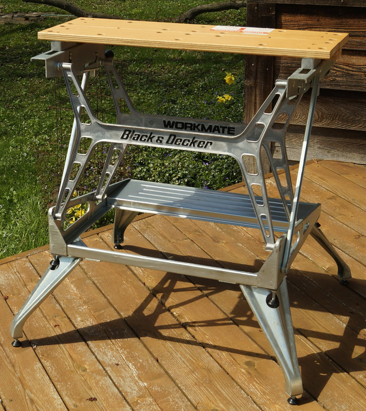


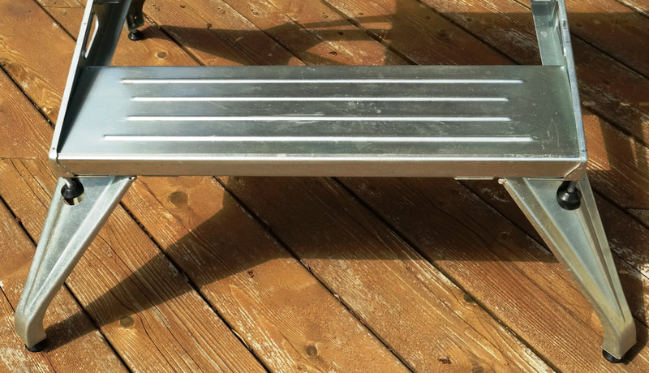

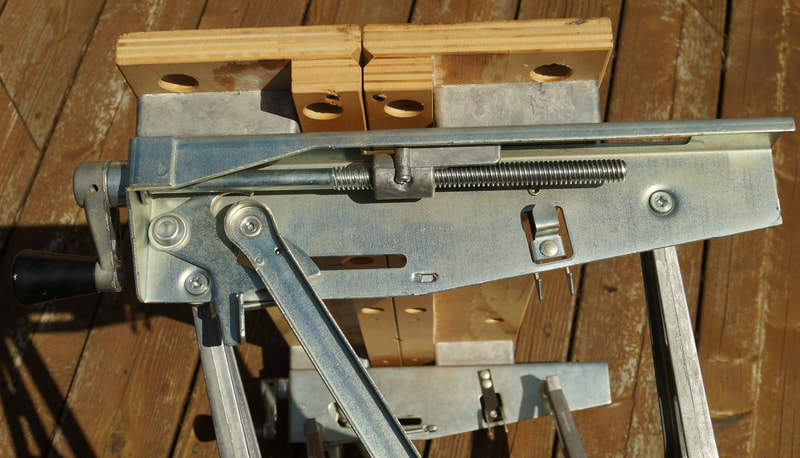

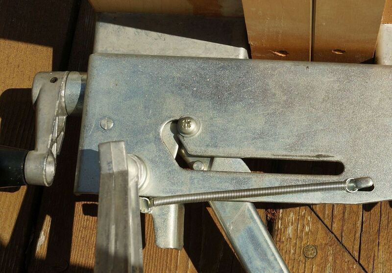

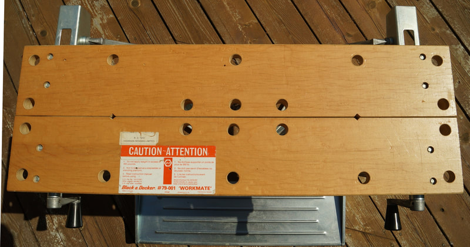

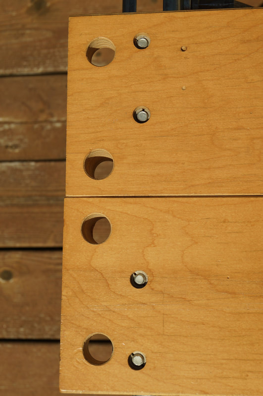

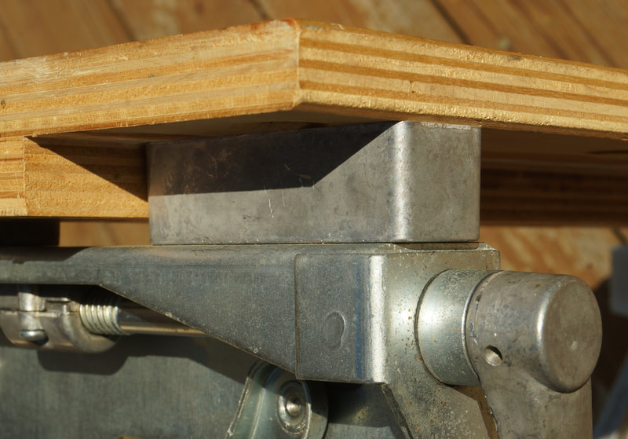

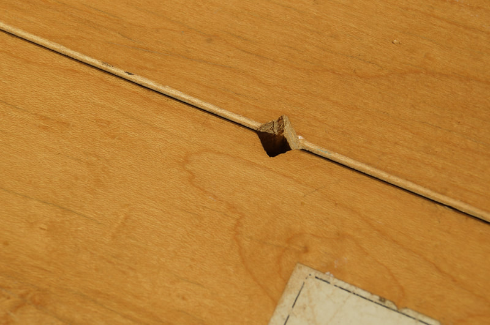

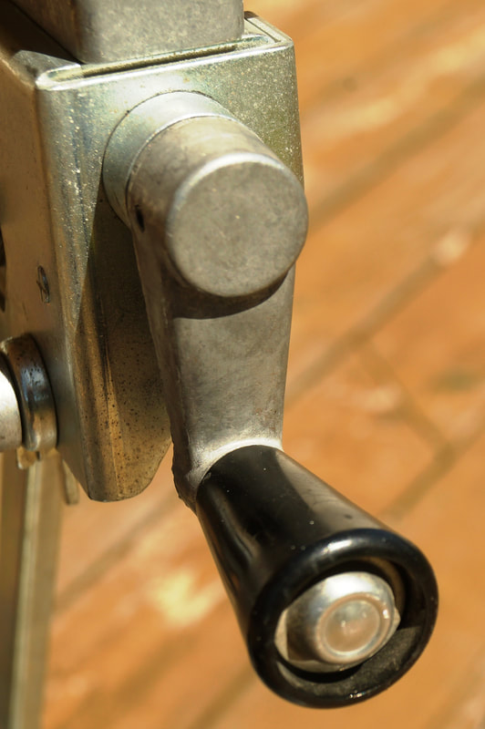

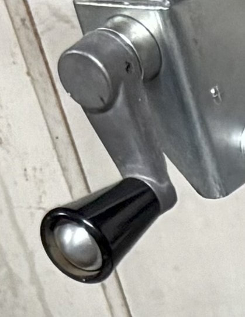

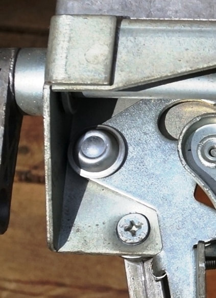

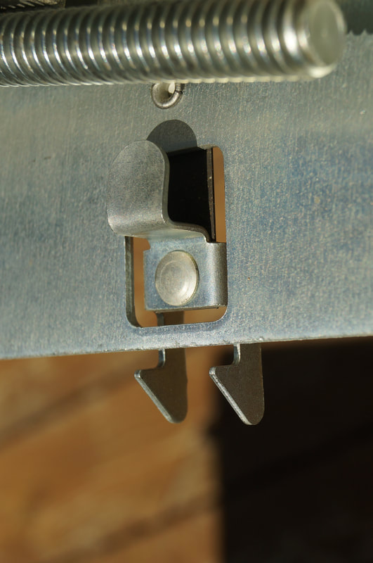

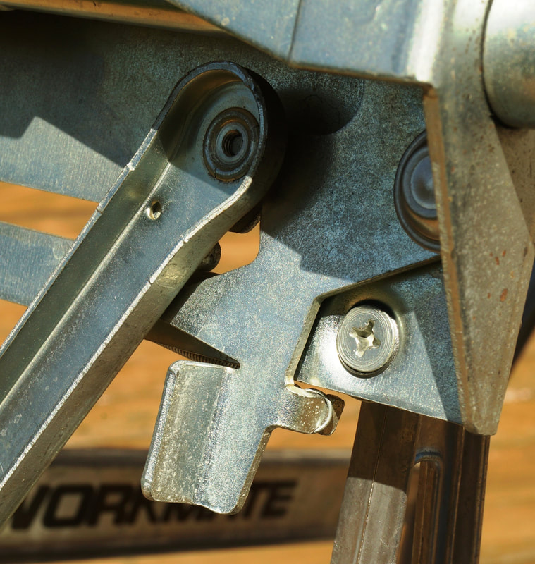

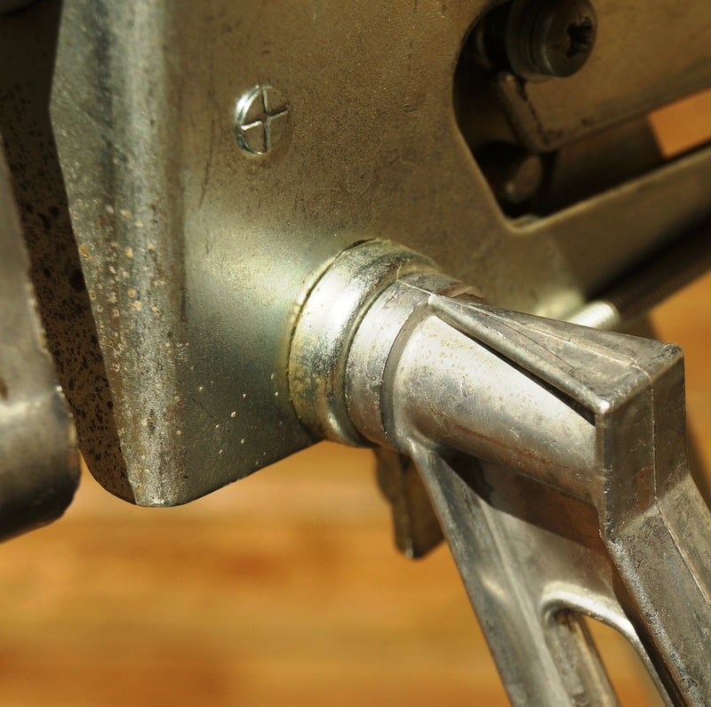

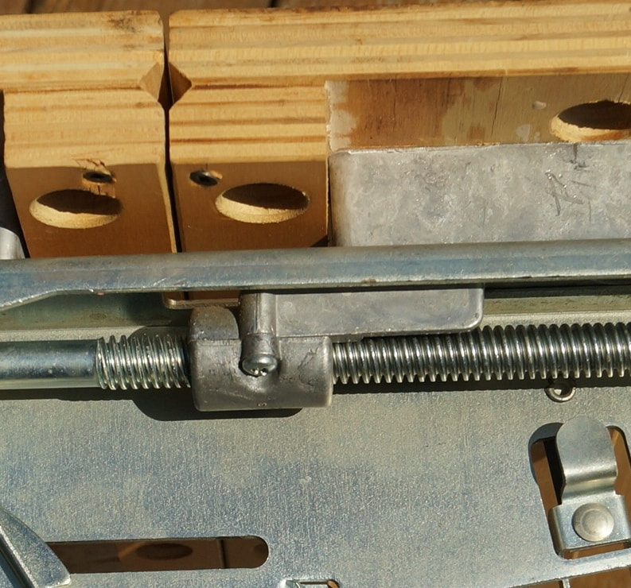

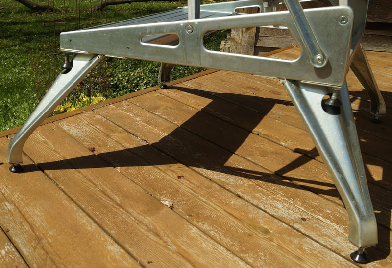


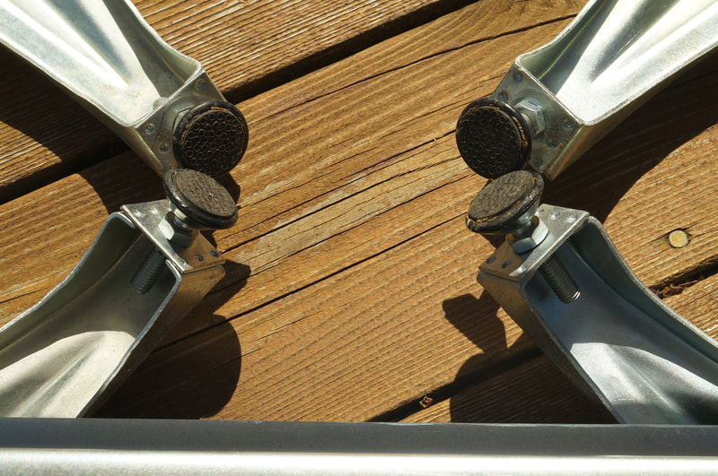

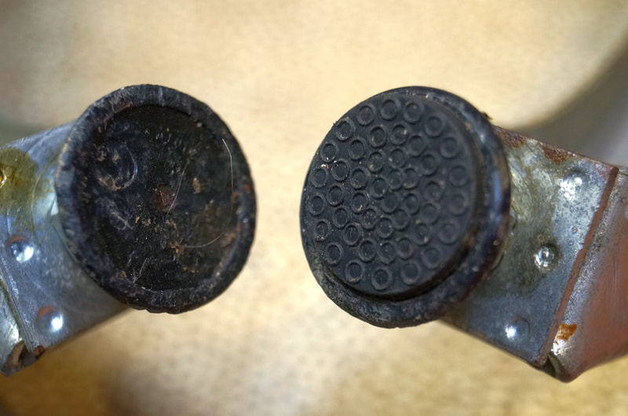


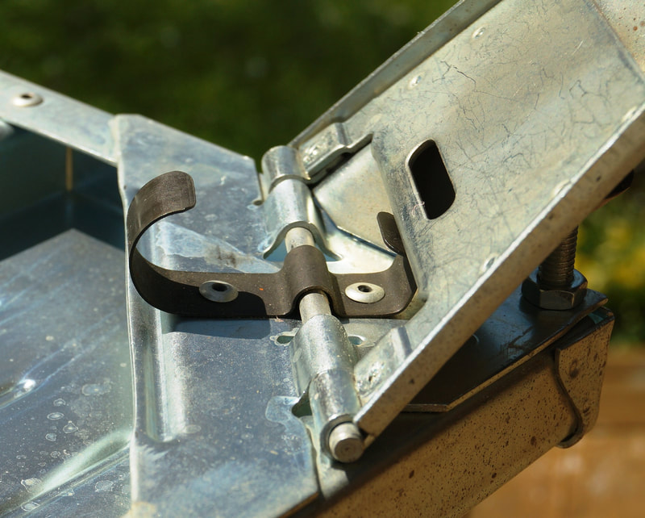

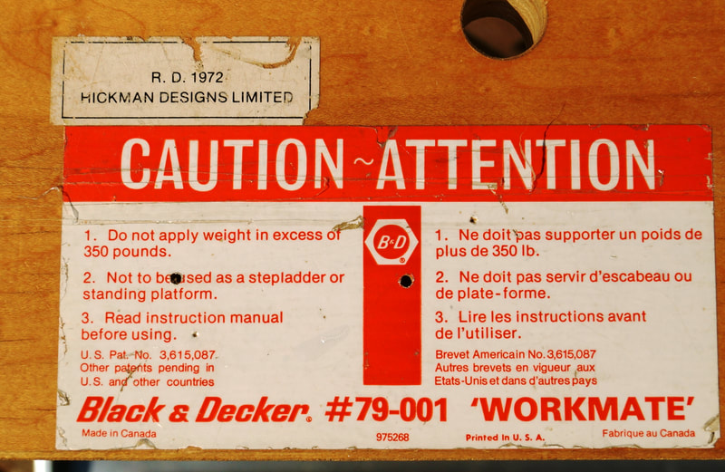

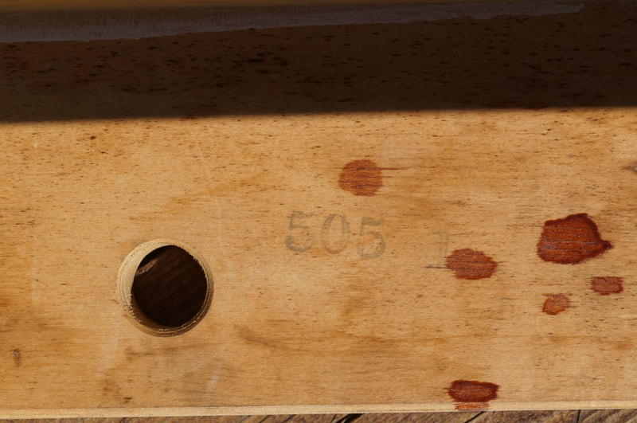